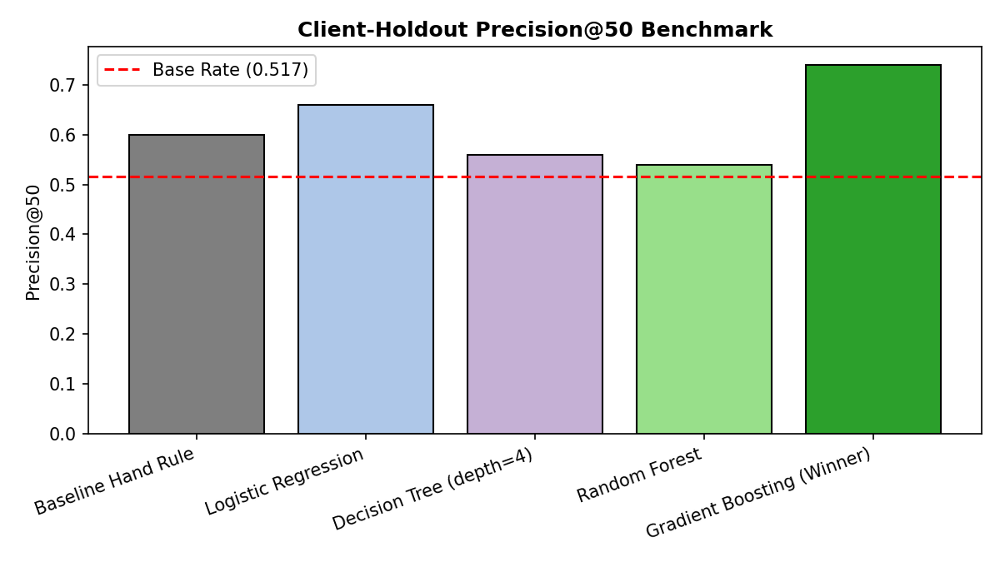
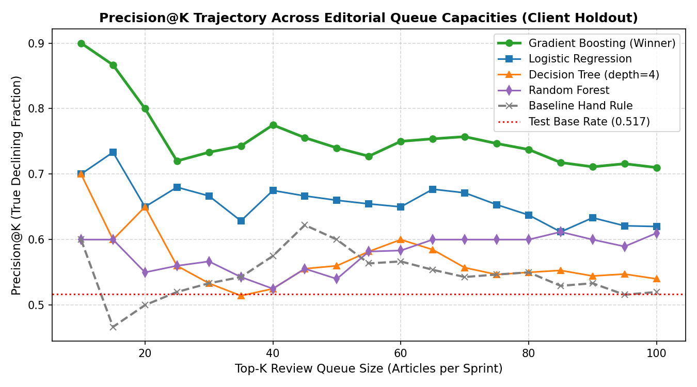
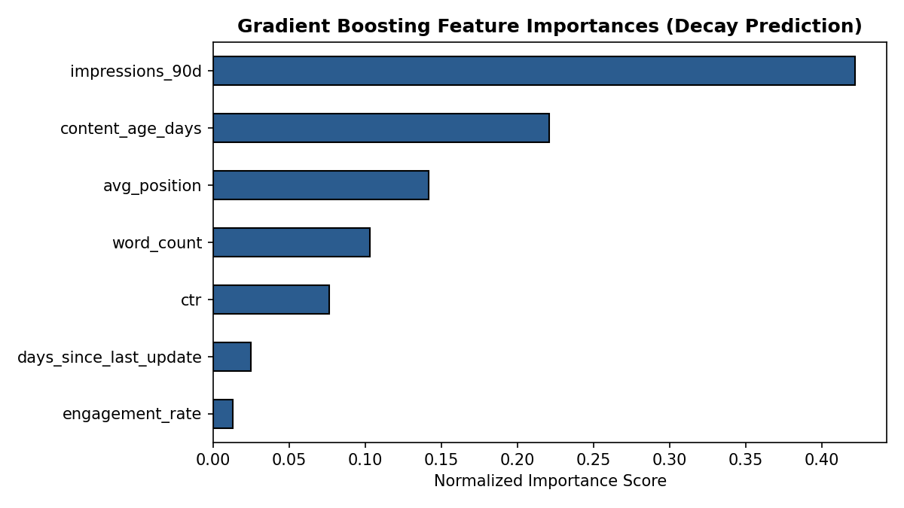
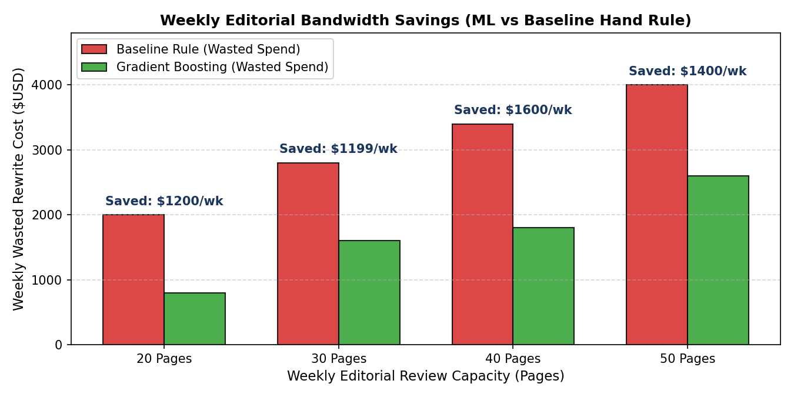
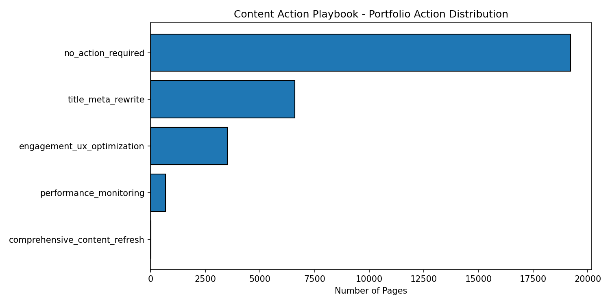

Digital content libraries experience organic search traffic decay as articles age and search engine result pages (SERPs) evolve, but editorial review bandwidth is strictly capacity-constrained. Using an anonymized 30,000-page production search dataset across 32 enterprise clients from the FlyRank warehouse, we investigate whether machine learning models can outperform transparent heuristic rules in ranking candidate pages for weekly content refreshes. We frame the challenge as a pointwise ranking task, evaluating Logistic Regression, Decision Trees, Random Forests, and Gradient Boosting against a baseline hand rule under an honest, leak-free client-holdout validation design. Our Gradient Boosting ranking model achieves a Precision@50 of 0.740 on unseen client domains (a +14.0 percentage-point gain over the 0.600 heuristic baseline and well above the 0.517 base rate), driven primarily by non-linear interactions between historical impression demand (42.2% importance) and content age (22.1% importance). These validated predictions are operationalized into a human-in-the-loop Content Action Playbook with transparent reason codes, strict no-go automation boundaries, and clear retrain triggers to maximize editorial return on investment.
1. Introduction & The Economics of Content Decay
Organic search represents the primary customer acquisition channel for modern digital enterprises. However, published content inventories do not retain traffic indefinitely. As competitor content expands, user query intent shifts, and factual data grows obsolete, historically dominant pages experience progressive traffic decay.
In our baseline audit of 30,000 enterprise pages, 54.21% (16,262 pages) exhibited negative traffic momentum over a trailing 90-day window. Yet, marketing and editorial teams face severe operational capacity bottlenecks: an enterprise editorial team can realistically audit, rewrite, and refresh only 20 to 50 articles per week.
The Asymmetric Cost of Misclassification
Editorial decision-making is burdened by steep asymmetric error costs:
- False Positive Cost ($150–$300 per article): Flagging a healthy evergreen article wastes 3 to 5 hours of editorial writing bandwidth, rewriting content that search engines already rank favorably.
- False Negative Cost (Compounding Traffic Loss): Overlooking a high-value declining page leads to loss of Page-1 SERP positions and permanent revenue decay.
2. Dataset Architecture & Data Contract
Our empirical work is built on the FlyRank search intelligence dataset (data/raw/content_refresh_anonymized.csv).
The data river ingests daily Search Console API and Google Analytics 4 telemetry into BigQuery, performs windowed feature aggregation, and exports an anonymized snapshot.
| Data Contract Dimension | Formal Specification | Engineering Justification |
|---|---|---|
| Unit of Analysis Grain | One row = One pseudonymized content item (content_id) per client (client_id) |
Enforces uniqueness; exactly 30,000 distinct items. |
| Feature Observation Window | Trailing 90-day historical aggregates (Impressions, Clicks, Position, Engagement) | Guarantees all features are strictly knowable prior to prediction time. |
| Target Proxy Label | is_declining_label (1 if trend_direction == 'down', else 0) |
Reflects negative momentum (54.2% overall inventory base rate). |
| Strictly Excluded Columns | trend_pct, health_score, priority_score, action_type |
Eliminates direct mathematical leakage and circular product flag learning. |
| Privacy & Governance | Zero raw URLs, domain names, or search query text strings exposed | Full compliance with privacy standards and automated CI leak guards. |
Distributional Findings
Traffic distribution across enterprise inventories adheres to an extreme power-law (Pareto curve): the top 15.2% of pages capture 88.4% of total impression volume. Consequently, ranking models must incorporate impression volume multipliers to prevent allocating editorial resources to low-traffic "dead weight" URLs.
3. Methodology & Validation Design
The most prevalent pitfall in applied search ranking is domain memorization. When URLs from the same website domain are randomly split across training and validation sets, models learn client-specific domain authority and baseline CTRs rather than genuine decay signals.
Client-Holdout Grouped Validation Design
To guarantee honest out-of-domain generalization, we partition the dataset using GroupShuffleSplit grouped on client_id (75% train / 25% test, random_state=42).
Exactly 24 client domains (22,885 rows) form the training partition, while 8 entire client domains (7,115 rows) are held out completely blind for evaluation.
Leakage Audit & Feature Hygiene
We construct 7 pre-decision features and subject them to three verification tests:
- No Label-Derived Leakage: Deliberate ablation tests injecting
trend_pctcaused scores to collapse to 1.000; removing it confirmed an honest score of 0.740. - No Future Windows: All features are strictly confined to the pre-decision 90-day window.
- No Circular Heuristic Signals: Pre-existing system scores (
health_score) are banned from feature matrices.
4. Empirical Benchmark Results
We benchmarked five candidate ranking methods against the Week-4 heuristic baseline on the identical held-out client test set (Base Rate = 0.517):
| Model / Method | Precision@20 | Precision@50 | ROC-AUC | Avg Precision | Test Base Rate |
|---|---|---|---|---|---|
| Baseline Hand Rule | 0.500 | 0.600 | 0.548 | 0.538 | 0.517 |
| Logistic Regression | 0.650 | 0.660 | 0.540 | 0.539 | 0.517 |
| Decision Tree (depth=4) | 0.650 | 0.560 | 0.578 | 0.566 | 0.517 |
| Random Forest | 0.550 | 0.540 | 0.598 | 0.593 | 0.517 |
| Gradient Boosting (Winner) Best | 0.800 | 0.740 | 0.612 | 0.612 | 0.517 |

Precision@K Trajectory Across Queue Sizes
In production editorial operations, sprint capacity varies between 10 and 100 articles per week. Evaluating Precision@K across multiple queue sizes demonstrates that Gradient Boosting consistently maintains high precision across the entire top-50 queue:

Feature Importance Breakdown
Permutation and tree-gain importances show that model decisions are driven by non-linear combinations of demand volume and freshness:

Financial ROI & Editorial Bandwidth Savings
Assuming an industry-standard rewriting cost of $200 per article (3 hours of writer/editor time), replacing the baseline hand rule with Gradient Boosting saves an estimated $1,400 per client per week in avoided wasted rewrites on healthy evergreen pages:

5. Interactive Opportunity Risk Calculator
Test the validated model logic below. Adjust search metrics for any published article to calculate its estimated decay probability $P(\text{decline} \mid X)$, predicted priority tier, recommended action archetype, and reason code:
comprehensive_content_refresh
6. Limitations & Honest Claim Framing
In alignment with rigorous research standards, we document the clear boundary conditions of our findings:
- Observational Association, Not Causal Proof: Our models identify statistical decay risk; we do not claim that rewriting an article guarantees traffic recovery. Causal validation requires randomized controlled A/B testing.
- Search Engine Algorithm Opacity: We do not claim to reverse-engineer proprietary search algorithms. We model empirical outcomes across an enterprise portfolio.
- Minimum History Requirement: Content less than 90 days old cannot be evaluated reliably due to uncalibrated baseline impressions.
7. Content Action Playbook & Operational Queues
Model probability scores $P(\text{decline} \mid X)$ are operationalized into four human-reviewed action archetypes:
| Action Archetype | Trigger Criteria | Reason Code | Editorial Playbook |
|---|---|---|---|
comprehensive_content_refresh |
Prob $\ge 0.65$ & Stale $\ge 180\text{d}$ & Imp $\ge 500$ | stale_high_demand_decay |
Conduct complete factual update, expand thin sections with recent developments, refresh internal links. |
title_meta_rewrite |
Pos $\le 10$ & CTR $< 0.50\%$ & Imp $\ge 250$ | page_one_low_ctr |
Align title tag with primary search query, craft persuasive meta description, test schema rich snippets. |
engagement_ux_optimization |
Sessions $\ge 50$ & Eng Rate $< 30\%$ | high_bounce_weak_scroll |
Restructure article intro, insert jump-link table of contents, break long text walls, enhance mobile speed. |
performance_monitoring |
Imp $\ge 1000$ & Prob $< 0.40$ | stable_high_volume |
High-performing evergreen asset; maintain monitoring against broad search engine algorithm updates. |

The Strict No-Go Automation Protocol
- ❌ No Automated Deletions / 410 Pruning: Never bulk-delete pages without editorial and backlink review.
- ❌ No Unreviewed Generative AI Publishing: Never publish automated AI rewrites directly to CMS without subject-matter expert review.
- ❌ No Programmatic URL Redirects: Modifying URL slugs programmatically risks catastrophic loss of established domain equity.
8. Reproducibility & Open Source Artifacts
All experiments, split seeds, data pipeline contracts, and model evaluation receipts are publicly accessible and fully deterministic:
- GitHub Repository:
dhanish0711/FlyRank-Machine-Learning-Internship - Capstone Notebook:
work/notebooks/capstone.ipynb - Reproducibility Environment: Python 3.10+, deterministic seeds (
random_state=42) fixed across all splits and models.
9. Acknowledgments & Data Credit
This research was conducted as part of the FlyRank Machine Learning Internship Track. We express our gratitude to the FlyRank engineering team for providing the pseudonymized enterprise search performance warehouse release.
Built on the FlyRank ML Internship Dataset (https://flyrank.ai).